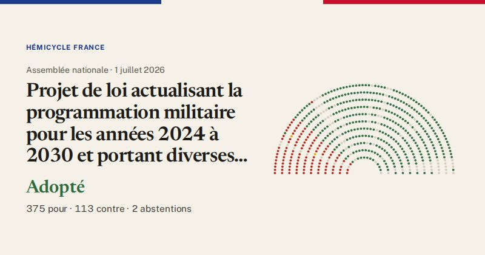

Assemblée nationale · scrutin n°7905 · 1 juillet 2026
Projet de loi actualisant la programmation militaire pour les années 2024 à 2030 et portant diverses dispositions intéressant la défense (vote final, commission mixte paritaire)
Adopté
375pour
113contre
2abstentions

Le vote de chaque groupe
| Groupe | Pour | Contre | Abst. | Membres |
|---|---|---|---|---|
| La France insoumise (LFI-NFP) | 0 | 62 | 0 | 71 |
| GDR (communistes) | 0 | 14 | 1 | 17 |
| Écologiste et Social | 1 | 36 | 1 | 38 |
| Socialistes et apparentés | 46 | 1 | 0 | 68 |
| LIOT | 19 | 0 | 0 | 23 |
| Ensemble pour la République | 86 | 0 | 0 | 91 |
| Les Démocrates (MoDem) | 26 | 0 | 0 | 37 |
| Horizons & Indépendants | 35 | 0 | 0 | 35 |
| Droite Républicaine | 44 | 0 | 0 | 48 |
| UDR (Union des droites) | 14 | 0 | 0 | 17 |
| Rassemblement National | 97 | 0 | 0 | 122 |
| Non-inscrits | 7 | 0 | 0 | 10 |